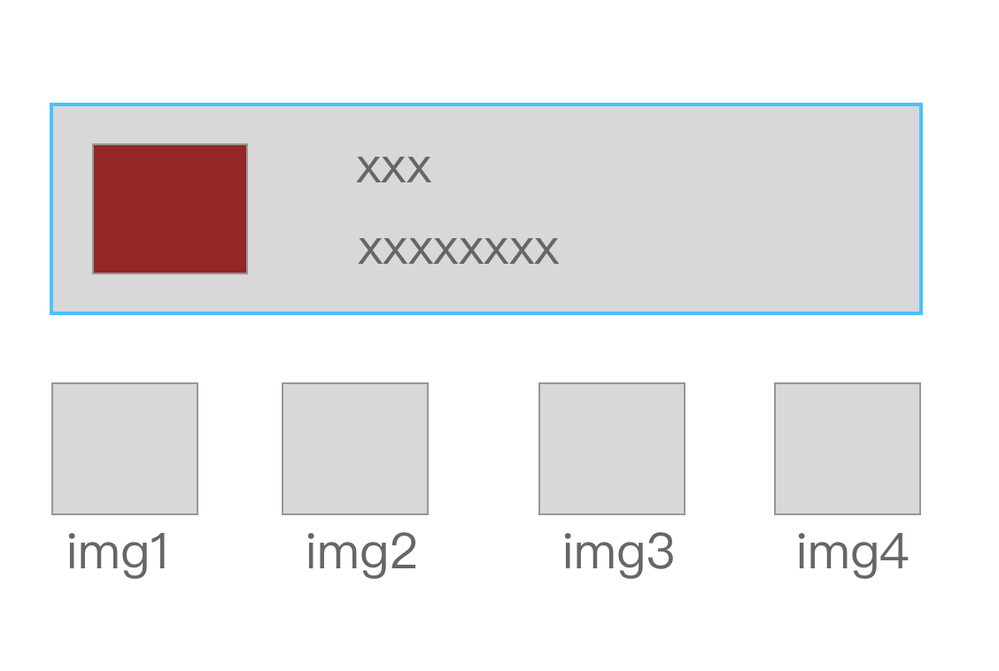

手机端适配方案
想象一下有不同大小屏幕，你需要做出一个h5页面，在多种不同的设备上保证没有较大的视觉差异，该如何解决？
我们来关注一下解决这个问题的过程中会遇到的问题：
- 页面元素的宽高如何衡量，同时还要考虑dpi的问题。
- 如何选取合适的html元素来承载页面的内容。html的dom element元素按照dispaly的属性，可分为block和inline两种类型，选择合适的元素来承载内容，可以缩减样式代码（也是html语义化的一种要求）
- 在页面布局相对复杂的情况下，页面整体结构不会发生很大的视觉变化（保证视觉稿的用户体验）
针对以上几点问题，以及一些基本的css知识，目前被应用在实际场景中的解决方法有以下几种：
- 固定宽度（早期的页面是这么做的，但是缺点很明显，有留白或者滚动条）
- 流式布局，本意是指布局时页面元素根据当前宽度和高度大小，一直产生堆叠的行为，我个人感觉和float的作用效果类似，但也无法完全还原设计稿(元素堆叠下元素的位置发生了变化)
- 响应式，根据@media设置不同的样式，与自适应的区别是自适应只会展示一套模版，响应式会根据屏幕宽度添加或减少dom元素(视觉稿不统一)，这两种方式宽度都是百分比。
- rem方案，宽高根据html基准值来进行调整，在不同屏幕下只要将根节点的基准值调整到合适的值，其他使用rem单位的元素会同步调整自身宽高属性
回过头来，我们在来看一下作为前端开发者，我们所需要的重点是什么：在给定视觉稿的情况下，不同大小的屏幕应该有一致的表现(这里的屏幕指主流的移动设备屏幕，不包括pc与ipad)，页面中元素不会发生移位和不协调的形变。
当然，这里需要说明一下，这里的关注重点是单一设计稿与体验相同，如果实际的业务场景需要对不同的屏幕进行很细致的用户体验控制，可能响应式的媒体查询更合适，对于一般的情况下，pc和手机端各做一套视觉稿就足以了，这里也只讨论这种情况下的屏幕适配问题。
好了，需求明确了，要完成这样的功能，前端工程师拿到一份视觉的设计稿，如何保证这份稿件能适配所有的主流屏幕呢？
拿到的设计稿是固定宽度的，又不能让页面元素形变，方法只有一个，对页面进行缩放，在html代码中实现缩放的方法，我个人总结的有两种：
- 标签的viewport，我们看一下以下代码:
|
|
这里设置了当前页面宽度等于屏幕宽度，1倍的缩放比例并且不允许用户缩放（chrome的ctrl＋滚轮，手机端双指控制）,在这种情况下如何进行缩放呢?假设我们拿到了一个基于iPhone 5s的设计稿，iPhone 5s的设备像素是320px；由于2倍的dpi，实际设计稿应该是640px(假设这个640px的设计稿视觉同学已经做好了)，这个视觉稿在750px的iphone 6上，要表现一致，应该写成这样：
|
|
其中1.17是750/640的比值，这样基本能保持视觉稿的一致性，天猫的app页面似乎目前采用了这种方式，其scale值最大达到1.3，1.3＊640=832px;
这种方式也有两个缺点：
@1:需要对不同屏幕计算不同的scale值，改变到meta标签中去。
@2:在有图片和文字的混合横列中，图片大小没有缩放，导致缩放后和原设计稿体验有些差异。如这种布局：在屏幕和设计稿的比例相差较大时，设置scale后会导致图片或者文字不清楚（相当于用放大镜看，这些内容本身没有改变宽高）
另一种缩放的方式，就是目前主流的rem解决方法，rem本身能够放大或缩小元素的宽高 (只要你使用它作为单位),同时你只需要根据当前页面设置根节点的rem大小值，所有使用rem的单位都会自动缩放大小。
下面来具体看一下rem是如何设置的。假设你拿到的设计稿为640的宽度，要在750的屏幕上表现相同，那么在这两种设备上根节点的font-size(简称base)应该满足比例为64:75，在实际的过程中，设计640设备下的base值时你需要考虑方便计算，因为用rem做单位要做一个比例计算，所以有些地方设置font-size为100，其他元素宽度除以100就可以得到以rem为单位的值了，在现在的一些css预编译的语言中，可以用函数来计算px转换到rem下的值，所以完全可以随方便来设置，一般的640设计稿html font-size值有32,20,100等,如果你不是全栈工程师的话，最好和你的同事沟通一下有没有其他考虑的因素再确定合适的根节点值。